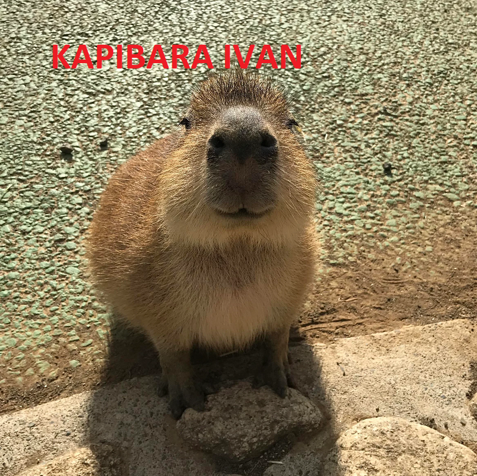
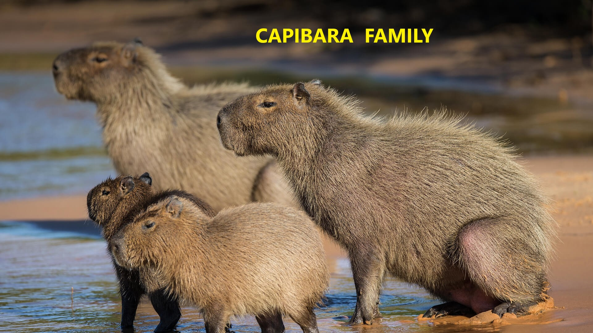

Капиба́ра, или водосви́нка (лат. Hydrochoerus hydrochaeris) — полуводное травоядное млекопитающее из подсемейства водосвинковых (Hydrochoerinae), один из двух (наряду с малой водосвинкой) ныне существующих видов рода водосвинки. Капибара — самый крупный среди современных грызунов.
 